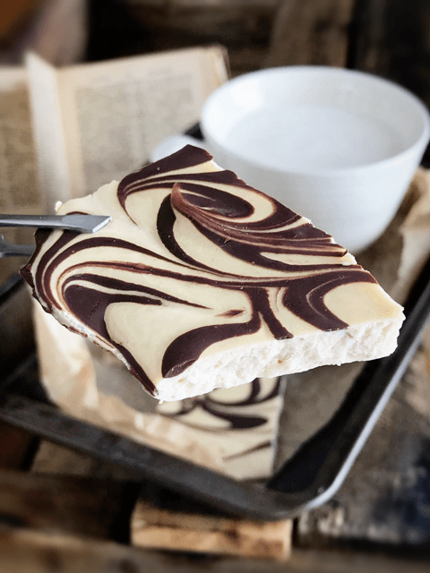

I don’t know about you, but I have to remind myself regularly to stop, slow down, and breathe. It’s not that I am holding my breath, but I tend to take shallow inhales. I don’t fill my belly with nourishing oxygen. Just the act of breathing has a ripple effect on everything that goes on in your body. For instance, did you know that deep breathing helps to trigger your vagus nerve? Are you even aware that we all have one? It’s ok if you weren’t. There was a time when I didn’t know that the darn thing existed either.
 Vagus Nerve… the Superhighway
Vagus Nerve… the Superhighway
The vagus nerve can be thought of as a superhighway that connects your body and your brain. It is the longest and most complex of the cranial nerves. The nerve runs from the brain through the face and thorax to the abdomen. This topic can get very complex and overwhelming in a very short amount of time, so I will do my best to nail down my intentions of what and why am I sharing this.
This nerve has many jobs, some of them being;
- It is intimately involved in managing sympathetic (fight and flight) and the parasympathetic (rest and digest) balance.
- It also communicates messages between the gut and the brain. 80% of the vagus nerve’s fibers deliver information from the enteric nervous system (the second brain in the stomach) to the brain.
- It regulates the muscle movement necessary to keep you breathing. Your brain communicates with your diaphragm via the release of the neurotransmitter acetylcholine from the vagus nerve to keep you breathing. If the vagus nerve stops releasing acetylcholine, you will stop breathing.
- It has profound control over heart rate and blood pressure.
- It is essential for fear management. Remember that “gut instinct” that tells you when something isn’t right? It turns out that the vagus nerve plays a significant role in that.
- (source)
The Act of Stimulating the Vagus Nerve
There are many ways to help active your vagus nerve; gargling, humming, singing, the application of a Tens Unit, and so forth. By breathing deeply and slowly, it can create a positive effect on your vagus nerve. Your heart and neck contain neurons that have receptors called baroreceptors, which detect blood pressure and transmit the neuronal signal to your brain. This activates your vagus nerve that connects to your heart to lower blood pressure and heart rate. Slow breathing, with a roughly equal amount of time breathing in and out, increases the sensitivity of baroreceptors and vagal activation. (1)
Square Breathing
Personally, I have been practicing what is referred to as “square breathing.” Here’s what I do:
- Inhale for 7 seconds
- Hold for 7 seconds
- Exhale for 7 seconds
- Hold for 7 seconds
- Repeat
I repeat this about 5 times in a row. At first, I had to start with 4 seconds, my body was not used to taking deep breaths, and I found myself getting light-headed, so please be sure to listen to your body. This type of breathing can have a significant impact on your overall wellbeing. It helps stimulate the parasynthetic nervous system which puts your body in the rest and digest mode (a time for healing), it can reduce anxiety, stress, and bring an overall calmness to your day. I practice this in the car, in the grocery checkout lane, while folding clothes, and while making a batch of Peanut Butter Chocolate Swirl Protein Bark!
So with all that being said, make this recipe, then break off a chunk, sit down and savor each morsel. Take some deep breaths and let go of any stress that prevents you from enjoying your day to day tasks. I hope you enjoy this simple yet delicious treat. Please leave a comment below. I love hearing from you. blessings, amie sue

Ingredients:
- 1.6 cups (398 ml) full fat coconut milk
- 1/2 cup (124 g) natural peanut or almond butter
- 1 scoop (22 g) vanilla fermented vegan proteins+
- 1 tsp (4 g) gelatinized maca
- 1/4 tsp liquid NuNatural stevia or 1/4 cup (92 g) raw honey
- 1/4 tsp (2 g) Himalayan pink salt
- 1/4 cup (40 g) Lily’s stevia chocolate chips or raw chocolate chips